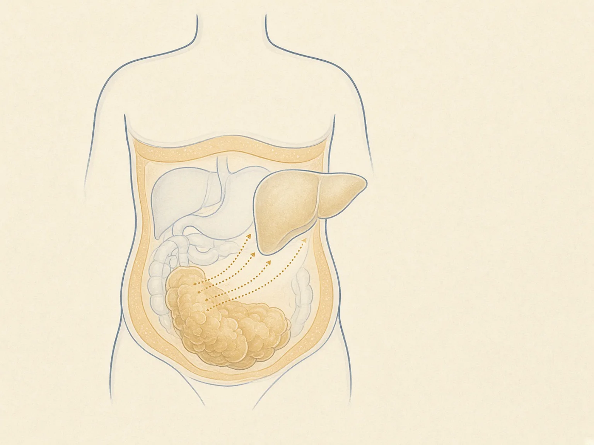

«Вес на весах = висцеральный жир»
Нет. Два человека с одним ИМТ могут сильно различаться по талии и по риску. Талия — грубый, но полезный ориентир, не замена томографии.
Жировая ткань выделяет свободные жирные кислоты и сигнальные молекулы. Если запас растёт вокруг органов — висцерально — печень и мышцы чаще «глуше» слышат инсулин. Цифра на весах этого не показывает.
8 источников
обзоры и рекомендации
Не размер тела = диагноз. Метаболический риск связан с тем, где и как работает жировая ткань, а не с моральной оценкой внешности.
Склад и орган
Подкожная клетчатка — основной «сейф» для триглицеридов. Пока она может расти за счёт новых клеток, липиды реже выплёскиваются в печень, мышцу и поджелудочную железу.
Висцеральный жир лежит глубже, вокруг органов брюшной полости. Он метаболически «громче»: чаще отдаёт свободные жирные кислоты и провоспалительные сигналы. ИМТ этого не разделяет.
Нет. Два человека с одним ИМТ могут сильно различаться по талии и по риску. Талия — грубый, но полезный ориентир, не замена томографии.
Нет. Подкожный депо в бёдрах и ягодицах часто нейтральнее, чем избыток внутри живота. «Тощий снаружи — жир внутри» тоже бывает.
Нет. Речь о низкоинтенсивном иммунном фоне: макрофаги, TNF-α, IL-6. Это не повод «чистить организм» БАДами.
Не только калории на выход
Когда адипоциты переполнены, липолиз отпускает в кровь свободные жирные кислоты (СЖК). Большая часть висцерального жира дренируется в воротную вену: печень первой встречает этот поток. Параллельно ткань меняет набор адипокинов — меньше адипонектина, больше воспалительных молекул — и липиды оседают там, где им не место: печень, мышца, поджелудочная.
Свободные жирные кислоты
Печень получает больше СЖК и глицерина: глюкоза и ЛПОНП могут расти, инсулин извлекается хуже.
Воспаление
Гипертрофия, гипоксия, TNF-α и IL-6 мешают инсулиновому сигналу. Это не «гнойник».
Эктопический жир
Если подкожный сейф не справляется, липиды идут в печень (MASLD) и другие органы.
Портальная гипотеза
Схема учебная: висцеральный жир и поток к печени. Это не единственная причина инсулинорезистентности — эктопический жир в самой печени и церамиды тоже важны. Портальный путь остаётся рабочей моделью, не лозунгом.

Ассоциации и механизмы
Позиционные обзоры связывают избыток висцерального и эктопического жира с атерогенной дислипидемией, диабетом 2 типа и MASLD. Портальная теория не закрывает все споры: часть эффекта идёт через жир в самой печени.
Neeland и соавт. в Lancet Diabetes & Endocrinology: гипертрофия, воспаление, сбой адипокинов и поток СЖК к печени — характерный портрет «висцерального» риска.
IAS/ICCR: талия даёт информацию сверх ИМТ. Пороги зависят от пола и происхождения; измерение — у нижнего края рёбер / середины между ребром и гребнем, не «на пупке как получится».
Руководство EASL–EASD–EASO: стеатоз связывают с метаболической дисфункцией. Жировая ткань и печень обмениваются сигналами; это не повод к самостоятельной «детокс-чистке».
Честно про кислоты
Свободные жирные кислоты нужны мышце и сердцу между едой. Проблема — хронически высокий поток плюс слабый захват тканями. Старые схемы «жир вытесняет глюкозу» упростили картину: сейчас смотрят на диацилглицерины, церамиды и иммунный фон. Не пейте «жиросжигатели» из этого абзаца.
Без стыда и чудес
Пресс не выбирает висцеральный жир. Распределение меняет системный баланс энергии, сон, гормоны, иногда лекарства — не «зона живота» в приложении.
Высокочувствительный СРБ отражает фон, не ставит диагноз «воспаление жира». Его интерпретирует врач вместе с остальным.
Резкий дефицит может крутить вес воды и срывы. Устойчивый рацион и движение ближе к данным, чем трёхдневный сок.
Ориентиры, не ритуал
Ниже — сжатие консенсуса по талии и общих рекомендаций по движению и питанию, не персональный план. Пороги талии различаются; их называет специалист.
Консенсус IAS/ICCR предлагает рассматривать окружность талии как витальный признак вместе с ИМТ. Динамика важнее одной «идеальной» цифры из инфографики.
Умеренная нагрузка и сила могут уменьшать талию даже когда весы скромны. Подробнее — на странице про мышцы.
Меньше сладких напитков и ультрапереработки, достаточно белка и клетчатки. Нет доказанной «диеты специально от сальника» для всех.
Хронический недосып связан с аппетитом и распределением жира, но это не лицензия на БАД «антистресс». Сначала режим и, если нужно, врач.
Тело любое
Коротко
Висцеральный депо активнее отдаёт кислоты и сигналы, чем просто подкожный слой.
СЖК, адипокины, тихое воспаление. Портальный путь — модель, не единственная правда.
Смотреть талию вместе с ИМТ, двигаться, есть устойчиво — без точечного «сжечь живот».
проверить самим
Подборка обновлена 10 сентября 2026 года.